ICML：用未来交互回报学习长期对话中的记忆存取
《Interactive Memory Learning for Long-Term Conversations》由 Cai Ke、Jiangyue Yan 等人提出，一作主机构为哈尔滨工业大学（深圳），合作机构包括鹏城实验室。论文于 2026 年 9 月 15 日公开，本笔记于 9 月 17 日依据完整论文及附录整理。论文入口。本轮未发现本文独立公开代码入口；下文实现细节来自论文，不代表已经复现。ICML 是 InteraCtive Memory Learning 的方法简称，与同名学术会议无关。
现有长期对话方法常把记忆当成被动归档的数据库，缺乏随交互反馈调整信息价值的机制。因此，它们难以决定应该记住什么、何时调用记忆，也难以化解旧偏好与用户新要求之间的冲突。
1. 背景和问题
长期对话的困难并不只是输入太长。同一个人可能先说喜欢咖啡，后来又说喝咖啡心悸；如果助手只擅长召回最常出现的偏好，它仍可能在用户疲劳时推荐咖啡。这里既有信息保存问题，也有时间关系、约束优先级和回应目标的问题。记忆系统需要保留对未来决策有意义的变化，同时避免把某次下雨、临时赶工等背景噪声长期置于检索优先位置。论文用这类例子说明，记忆的价值要依照后续交互来判断，而不能仅凭一句话在语义空间里是否醒目来决定。
现有路线大致把工作拆成两步：写入阶段提取事实或摘要，读取阶段根据查询取出相关内容，再让通用语言模型生成回答。MemoryBank 通过事件和人格总结维持长期信息，A-Mem 将信息组织成有链接的原子笔记，MemoryOS 建立不同时间尺度的存储层级，THEANINE 强调保留历史及变化关系。这些系统的价值是真正缩短了上下文并改善了组织方式，但组织得复杂不等于决策已经学会使用反馈。系统可能一直执行同一个抽取提示词和召回规则，即使某种记忆反复导致不合适的回复，也没有明确训练通道去减少这种行为。
ICML 把研究对象转到存与取的策略。Planner 判断当前交互是否值得写入；Trigger 在之后的查询里决定用哪条记忆，或者完全不检索。两者的动作在时间上分开，但价值互相依赖：没有存入的事实以后再好的检索器也找不到；保存得很多却从不使用的记忆，又可能只是增加成本。因此，论文引入跨会话反馈，把未来回答的质量回传到此前的保存动作。这一点比简单提高向量召回相似度更接近推荐系统的长期归因问题：上游选择是否有价值，要看它对下游行为的贡献。
需要先限定任务范围。论文研究的是长期开放域对话，目标是让回应更连贯、更个性化、更像一个了解用户的对话伙伴。它并未把数学、代码、严格事实问答或复杂工具执行作为主要评测对象。用户可以接受多种措辞和不同话题展开方式，所以单条标准答案的词面重合不能完整表达质量。与此同时，“说得自然”和“真正帮助用户”也不是同一件事，模型可能通过重复用户偏好、增加亲切表达而获得更高评分，却没有改善事实正确性或实际决策。这是阅读实验时必须保留的任务边界。
从系统层面看，外部记忆有三种经常混在一起的资源：保存的文本内容、检索决策模型的参数，以及最终回答模型的上下文。ICML 主要学习第二种资源，并通过它改变第一种资源及第三种资源的输入。最终回答骨干可以是闭源模型，不必更新其内部权重；但这并不意味着整个方案免训练。开源策略模型仍要经历监督预热和在线强化学习，裁判也要生成即时奖励和质量奖励。所谓即插即用主要描述与回答骨干的接口关系，不能直接理解为接上一个数据库就获得免费适应能力。
另一个关键困难是冷启动。刚遇到新用户时，没有足够真实历史可以告诉策略哪些内容未来会有用。作者选择从一个种子会话逆向合成此前发生的故事，再正向标注记忆依赖。这样能构造“为什么现在的约束会出现”的训练轨迹，降低最开始完全随机探索的风险。代价是系统先接受了一个模型创造的因果故事：虚构出来的历史虽然适合训练，不能当成用户真实履历写入正式用户档案。合成轨迹作为策略预训练材料与真实事实记忆的隔离，是迁移到产品时必须新增的约束，论文的生成质量实验并没有替这层隔离做完整验证。
对推荐从业者而言，这项工作最值得关注的是特征保留目标。用户画像往往积累大量过去的点击或对话摘要，却缺少对“哪条历史在什么时候影响了结果”的显式记录。Planner 类似动态特征写入门，Trigger 类似查询条件下的特征选择器，延迟回报类似下游效用对上游信息选择的信用分配。不过，对话评分与点击、停留、满意度等反馈的统计性质不同。推荐反馈受到曝光位置和候选供给影响，不能把一次高回报简单全部记到某条历史上；这里的思想可以迁移，奖励公式则需要重新建立因果与偏差控制。
论文将问题形式化为部分可观测决策过程，是因为真实用户意图并不直接可见。模型能看见当前输入、最近上下文和已有记忆，但无法完整知道用户的长期目标，也不能确定用户一句否定是偏好改变、情绪波动还是对当前建议不满意。把这个问题称为决策过程，有助于说明为什么需要探索和跨时间优化，却并不自动使模型获得准确的隐状态估计。记忆内容错了、用户表达含糊或奖励模型误判时，训练过程仍会强化错误理解，长时间互动甚至可能使这种偏差积累。
因此，本篇真正要验证的不是“记忆越多越好”，也不是“在线更新总比固定模型好”，而是：在有限对话样本中，联合学习保存与调用，并把后续回应分数回传，能否相对于已有记忆管理系统获得稳定收益；这些收益是否覆盖不同生成骨干与数据集；收益又要支付多少合成、训练、检索和评分成本。把这几个问题分开，才能避免把一组较好的自动指标扩大成对真实用户长期关系的完整证明。
长期存取还存在一个容易被忽略的观测限制：系统只能从已经发生的交互推测未来，而用户未再次提及一条事实，并不表示它失去价值。健康限制、重要约定等低频信息可能很久后才被用到，最近没有反馈也不能成为删除它们的充分依据。论文采用代理奖励缓解这类稀疏反馈，但代理本身依然依赖教师的常识判断，未形成针对低频高损失事件的独立安全保证。这一边界使其更适合先作为可审查的记忆选择组件研究。
2. 方法
2.1 回溯合成与冷启动
原文先定义部分可观测环境，再解释回溯数据构造。完整状态包含潜在意图和全部交互历史，而可见观察由当前查询、最近上下文及外部记忆组成。联合动作则拆成二元保存决策和带有空选项的记忆索引。这个拆分允许策略对“应不应该使用历史”作独立判断，不会要求每次回答都强行插入一条记忆。
符号解释：轮次为 $k$，$u_k$ 是用户输入，$H_k$ 是最近对话，$M_k$ 是记忆集合；上标 $p$ 表示 Planner，上标 $t$ 表示 Trigger。保存动作的一表示写入，检索动作的零表示不用记忆。以上是原文问题定义的整理，并非额外增加的算法。
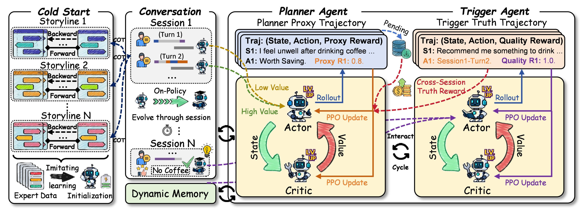
Figure 2 左侧把冷启动分成逆向故事生成和正向标注两步：先从用户首次表达某种约束的种子会话出发，递归补出更早的会话，使当前偏好有可追溯原因；随后按照时间顺序标注哪些轮次值得保存、哪些历史会在后文被引用。右侧则展示真实运行期间的双代理与奖励回路。黄色区域是动作与策略更新，虚线将被调用的历史连接回早先的存储轨迹。读图时最关键的是区分合成历史、当前环境交互和缓冲区，三者承担训练初始化、采样及延迟归因的不同职责，不能把左侧虚构的历史直接解释为系统真的观察过用户。
附录给出的默认合成配置是每个 episode 三条故事线，每条向前追溯四个会话，总体预热数据规模为约零点二五千个 episode。逆向生成提示要求每段前传超过二十轮，并与已知对话保持角色和逻辑一致；Planner 标注提示倾向保留潜在有用信息，Trigger 标注提示则积极寻找关联，允许返回多个记忆标识。这些提示使冷启动样本中的依赖更密集，也把“宁可多留”的偏好植入监督信号。训练阶段另外加入同会话无关轮次作为困难负例和全局随机记忆作为较容易的负例，目的是避免模型只凭表面相似就选择任何历史。图中的预热因而不是单纯扩大数据量，而是主动设计可学习的依赖结构。
监督预热学习率为 $2\times10^{-5}$，训练三轮，采用低秩适配，秩为八、缩放系数十六、丢弃率零点一。论文把此过程用于新环境适应；但关于每个用户是否重新生成全部轨迹、不同 episode 间是否重置策略与优化器、生成教师调用量等细节仍需要代码核验。尤其种子会话来自测试交互时，应明确只使用时间线上已经暴露的信息。倒推故事本身是允许的测试时训练操作，偷看后续回复或评价目标再构造训练标签则会破坏严格的因果评测，两种情形必须区分。
2.2 Planner 与 Trigger 的联合决策
Planner 接到当前交互后输出保存或丢弃。被保存的信息压缩成新记忆片段加入集合；即时代理奖励由回答骨干评估这条信息对未来对话的潜在价值，并归一化到零到一。如果丢弃了高价值内容，则使用带系数的负向漏存惩罚。正文状态描述主要写当前查询，而问题定义和算法伪代码使用了更完整的观察，实际输入序列应以发布实现为准。这个小差异会直接影响Planner能否判断“已经存过”与“当前矛盾”，因此不能仅把它看成排版问题。
Trigger 查看当前查询、近端上下文及候选记忆，在索引空间选择一项或选择零。取出的片段与上下文一起交给最终回答模型，原文式一写为：
符号解释：$r^*$ 是生成回复，$P_{\mathrm{LLM}}$ 是回答骨干的条件分布，$m_{a_k^t}$ 是选中记忆。此式本身不训练回答骨干，只规定检索结果进入生成条件。选择零时，应理解为没有附加历史片段。附录生成提示还允许模型在记忆误导回答时忽略它，并要求不过度塞入信息，这为检索错误提供了最后一道缓冲，但也令高质量回答不必完全归功于所选记忆。
质量裁判从相关与流畅、记忆运用和语气等维度给分，再平均成奖励。它是模型评估信号，不是直接从用户满意度观测得到的真实标量。若裁判更喜欢显式提及旧偏好，Trigger 可能朝这种风格优化；如果回答骨干本身很强，它也可能在检索不佳时得到较高分。因此，学习到的是在当前生成器和裁判组合下更有利的检索策略，是否独立识别了真正必要的历史，仍须无记忆对照或替换记忆实验。形式化索引是单选，而标注提示允许多记忆关联，案例也展示组合偏好；这两层如何通过候选片段合并衔接，需要实现补充说明。
2.3 跨会话延迟奖励和 PPO
保存动作的效用要等后续被使用才可能显现，延迟反馈是本方法连接写入与检索的关键。系统设置待奖励缓冲区，记录已存但尚未验证的轨迹；未来 Trigger 调用该片段时，追溯其创建轮次，并把回复分数加回历史保存决策。正文式二为：
符号解释：$r^{\mathrm{proxy}}$ 是即时信息价值分，$r^{\mathrm{qual}}$ 是未来回复质量，$\lambda$ 控制延迟反馈权重，指示函数表示片段是否被调用。“Truth”是作者命名，它依然源自语言模型评分，并不等于客观事实标签或因果效用。被用过并且回复好，不足以证明没有这条记忆回复就会差。未被Trigger探索到的好记忆也可能一直只有代理奖励，这解释了为什么原文保留即时奖励和漏存惩罚。
原文式三用价值函数拟合累计回报：
符号解释：$j$ 区分两个代理，$\gamma$ 是折扣因子，$V_\phi^j$ 估计该观察的未来价值，$\tau$ 是采样轨迹。累计回报表达式将原文求和指数中的不一致下标按求和变量统一，含义不变。评论家最小化预测与回报的平方误差，为行动优势估计提供基线。
原文式四给出截断策略目标：
符号解释：$A_k^j$ 是优势估计，$\rho_k^j$ 是新旧策略概率比，$\epsilon$ 限制一次更新幅度，$\mathcal S$ 是熵奖励，$\beta$ 控制探索强度。尽管命名为 loss，原文叙述是最大化该目标；若实现使用梯度下降，需要取负号。在线训练采用较小行动器学习率 $10^{-6}$、评论家学习率 $10^{-5}$、折扣零点九九、优势估计参数零点九五及截断零点二。优势估计参数和奖励混合系数在论文中都使用相同字母，但不是同一个超参数。
附录 Algorithm 1 的运行顺序是先检索与生成，再做本轮保存，最后按会话更新策略；这种顺序避免把刚刚生成的回应当作回答自身的历史。它在奖励回传行仅写未来质量分，并从待奖励缓冲区移除该记忆，与正文的混合奖励式并不完全一致。最保守的理解是伪代码省略了即时项，复现时却不能自行假定：需确定两种奖励何时合并、首次和重复触发如何记账、跨会话旧策略轨迹是否仍满足近似同策略更新。论文提出了闭环，但这些实现选择会影响稳定性和归因强度。
3. 实验结果
3.1 跨骨干主结果：整体较强，但并非全指标占优
实验采用 CC、MSC 和 GC 三个长期对话数据集。附录列出它们的完整语料规模，但实际评测从每个数据集测试集抽取五十个 episode。原文同时出现合计二百五十个 session 的描述，究竟指每个数据集还是整体统计应进一步核对，不能把完整语料的百万量级会话数当成实际评测规模。回答骨干为指定版本的 GPT-4o 与 Gemini 2.5，记忆策略采用 Llama、Gemma、Qwen 的多个规模，默认分析使用 Qwen3-8B 与 Gemini 2.5。
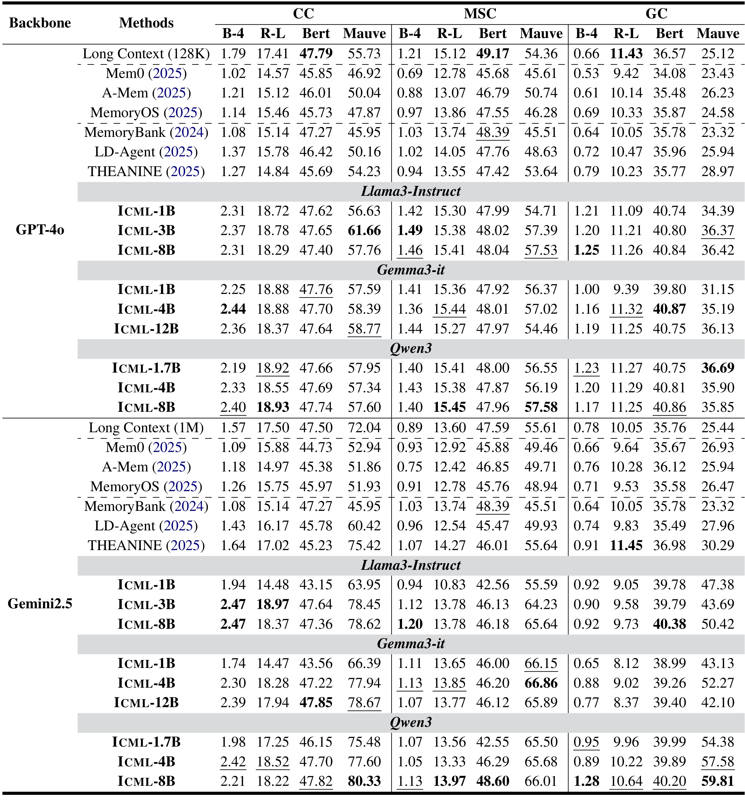
Table 1 横向按三个数据集分组，每组包含词面指标、语义相似度与分布指标；纵向首先区分回答骨干，再区分策略模型家族和规模。以默认 Qwen3-8B 加 Gemini 为例，CC 的 BLEU-4、ROUGE-L、BERTScore、Mauve 分别为二点二一、十八点二二、四十七点八二、八十点三三。THEANINE 对应一点六四、十七点零二、四十五点二三、七十五点四二，说明这里并非只有一种指标改善。GC 上同一配置的 Mauve 为五十九点八一，THEANINE 为三十点二九，差异更大；但后者 ROUGE-L 为十一点四五，高于 ICML 的十点六四。应报告这种交叉，而不是跟随正文把所有维度都写成胜出。
GPT-4o 条件也给出类似提醒：Long Context 在 CC 的 BERTScore 为四十七点七九，Qwen3-8B ICML 为四十七点七四；MSC 上 Long Context 是四十九点一七，ICML 是四十七点九六。ICML 的词面和分布指标经常更好，但全历史输入在某些语义匹配指标上仍保有竞争力。这意味着存取策略在压缩信息与维持语义之间存在取舍，不能从平均表现推导任何历史都应该过滤。不同模型规模也不是单调曲线，例如某些较小策略的 Mauve 超过更大策略，说明训练适配、数据噪声与生成随机性都可能影响排名。
四类自动指标回答的问题不同：BLEU 和 ROUGE 更依赖参考措辞，BERTScore 衡量表示相似，Mauve比较生成文本与参考文本分布。Mauve较高不是百分之多少用户满意，也不是记忆事实全部正确。表中结果按原文百分数口径列出，应避免把相减得到的百分点再误称相对提升。由于主表没有逐项给出多次随机种子方差，对很小的差异不宜过度排序。更稳妥的结论是，在这三个抽样基准和两个回答骨干下，学习记忆策略取得广泛竞争力，但指标、模型与数据集之间仍有明显异质性。
3.2 模型裁判与人工偏好
除了参考文本指标，作者使用五个个性化维度：吸引交互、拟人感、连贯性、一致性和记忆性。它们更接近开放域对话目标，但同时受评价提示和裁判风格影响。
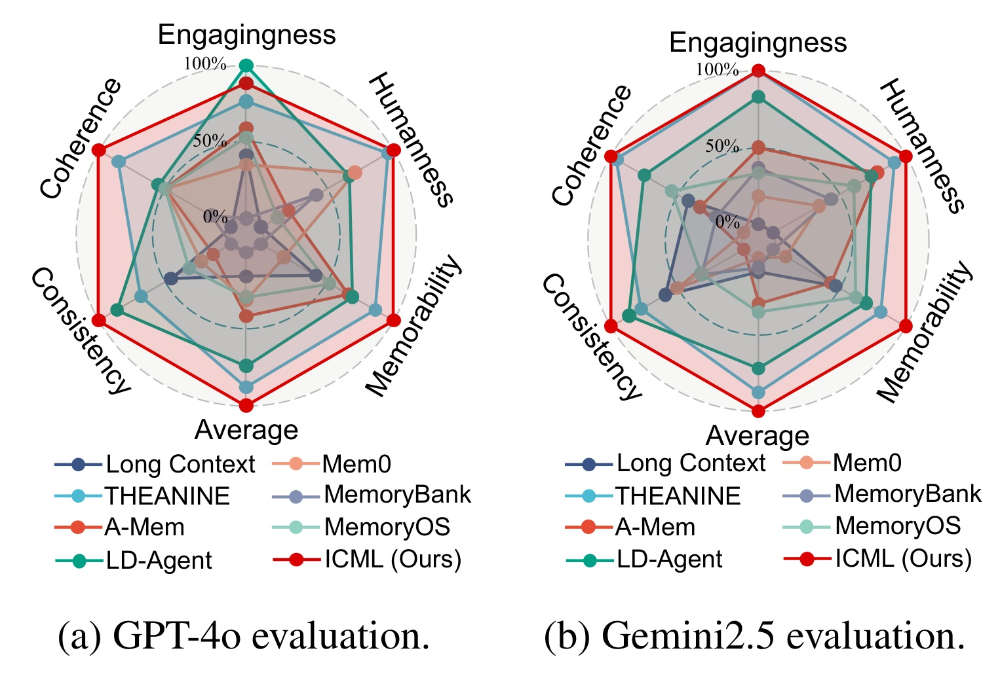
Figure 3 的两张雷达图分别对应 GPT-4o 和 Gemini 裁判，图上还有平均分轴，不能将平均轴再当成第六个独立质量维度。原始评分是一级到五级，显示时经过归一化，所以接近百分之百的外圈不是无错误率。ICML 在多个维度接近外侧，说明优势并不限于一句回复与标准答案更像，也包括裁判认为它更能延续历史、保持用户信息一致并引发后续对话。两个裁判给出的相似总体趋势降低了只迎合某一个模型的风险，但并没有完全消除共同训练偏好、相似评测提示以及由语言模型合成和评分形成的循环依赖。
这个图需要与方法里的质量奖励区别开来。训练奖励使用相关与流畅、记忆利用和语气，离线多维评价进一步观察长期对话表现；维度不完全相同，有助于防止只复读单一分数，却不能保证统计独立。若同系列模型同时充当回答者、合成者与裁判，对它熟悉的表达方式仍可能共同偏好。论文没有在这里提供真实用户长期留存或任务完成率，因此最合适的表述是模型裁判偏好获得支持，不应转换成线上用户价值已经证明。
从复现角度，雷达图还隐藏了分数分布。同样的平均连贯性提升，可能来自大多数样本小幅改善，也可能来自少量原本严重失忆的案例被纠正；两者对应不同产品优先级。若要检验存取策略究竟改变了什么，应保留每个样本各维度原始分数，按历史依赖强度、偏好冲突、时间间隔和不需记忆四类拆分。这里是基于图表提出的后续实验建议，原文没有给出这套分层结果。它能直接检验模型是否在确实需要记忆时提升，而不是所有回复都变得更长或更热情。
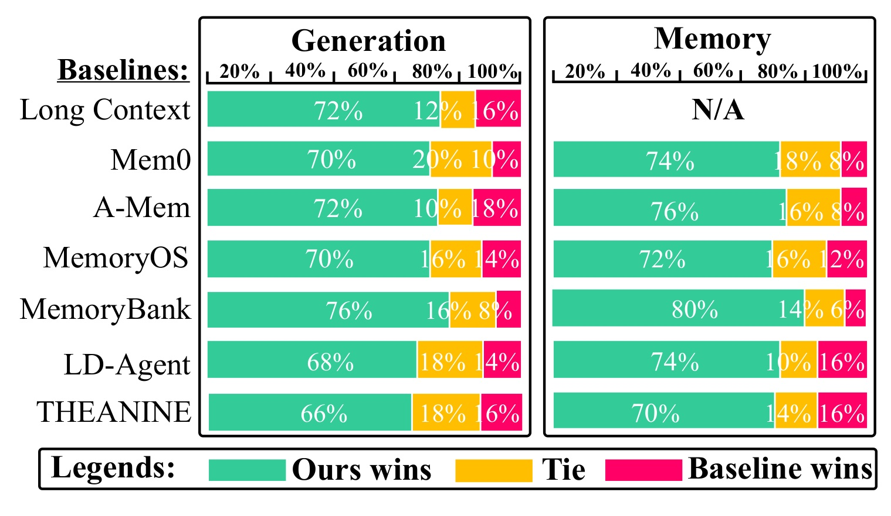
Figure 4 把回复生成和记忆检索分成左右两块，每一行对应一个基线，颜色分别表示 ICML 胜、平局与基线胜。相对 THEANINE，生成胜率为百分之六十六，平局百分之十八，基线胜百分之十六；记忆检索胜率为百分之七十，平局百分之十四，基线胜百分之十六。这个拆分比只报总体胜率更有信息，因为它展示仍有一批场景原系统更合适，也能区分用户看到的回复与内部召回是否同步改善。Long Context 没有独立记忆检索对象，所以该格为空，不能把空值当成零分。
评测由五名内部评审对每个数据集随机五十个样本进行评价。附录 Table 9 进一步报告相对 THEANINE 的生成胜率置信区间为百分之六十点五到七十一点五，检索为六十四点二到七十五点八；评审一致性系数分别零点六五和零点六八，且作者报告显著性小于零点零一。这些补充使“只是自动打分提高”的疑虑有所缓解，但内部评审与真实用户不是同一人群，五名评审对相同样本的评分也不能简单当成完全独立观测。样本、会话和评审三个层次的相关性应在重新分析时保留。
人工结果最值得相信的范围是给定静态样本的相对偏好，而不是长期交互中的因果收益。评审能看到生成回复和相应记忆，判断某条事实有没有被妥善使用，却不一定经历用户此前的情绪变化，也不会承担误记偏好带来的后续影响。若系统上线，应补充跨天真实用户试验与负向事件审计，例如不该提及的敏感记忆被调用、用户要求忘记后仍被保留、过时限制压过新要求等。论文的胜率给出了继续研究的理由，但没有覆盖这些失败模式。
3.3 消融与合成量：闭环有用，收益依赖数据
作者移除合成数据、Planner、Trigger、延迟奖励和在线演化，分别观察性能退化。该设计有助于判断提升来自整个链路还是某一个强骨干。
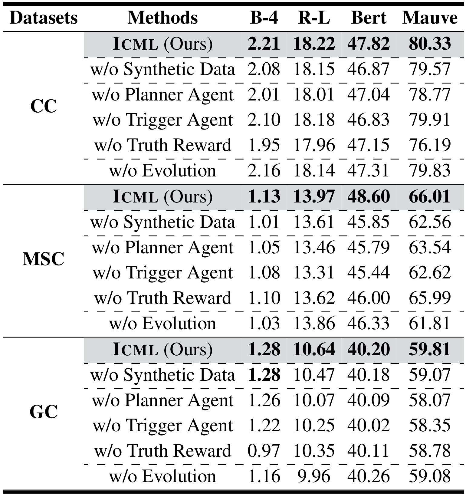
Table 2 中 CC 的完整模型 Mauve 为八十点三三，去掉延迟奖励后为七十六点一九，同时 BLEU-4 从二点二一下降到一点九五，这支持未来反馈为保存策略提供额外信息。去掉 Planner 后 Mauve 为七十八点七七，去掉 Trigger 后为七十九点九一；两者都有下降，但幅度不同，不应把“缺一不可”解释为每个模块贡献相同。MSC 去掉在线演化后 Mauve 从六十六点零一下降到六十一点八一，是这一数据集更突出的变化；它提示固定预热不一定足以替代交互适应。
同表也包含不支持简单叙事的结果。MSC 去掉延迟奖励后的 Mauve 为六十五点九九，几乎等于完整系统的六十六点零一，尽管 BERTScore 有明显下降。GC 去掉在线演化后 BERTScore 是四十点二六，略高于完整模型四十点二零，而其他指标多数下降。这些例外表明“最大下降一定来自延迟奖励”和“每个组件在每个指标上都必要”都过强。合理判断应是联合设计在多数组合中有效，延迟奖励的重要性随数据和评估维度变化，不能从单一消融行推导统一贡献排序。
消融还涉及公平实现的问题：删除一个代理后采用什么替代规则、是否重新调参、奖励调用预算是否相同，都影响对照强弱。如果去掉 Trigger 就换成未经调优的检索器，结果同时混合了可学习性与具体检索质量。论文提供了方向性证据，却未在主表中逐项拆开这些因素。进一步复现应固定回答器、候选池和相同交互轨迹，在保持总计算预算的条件下替换每个模块，并对多个采样种子报告差异区间。这样才能判断高成本模块是否对实际业务值得保留，而不只是判断完整系统能否赢过某个删减版本。
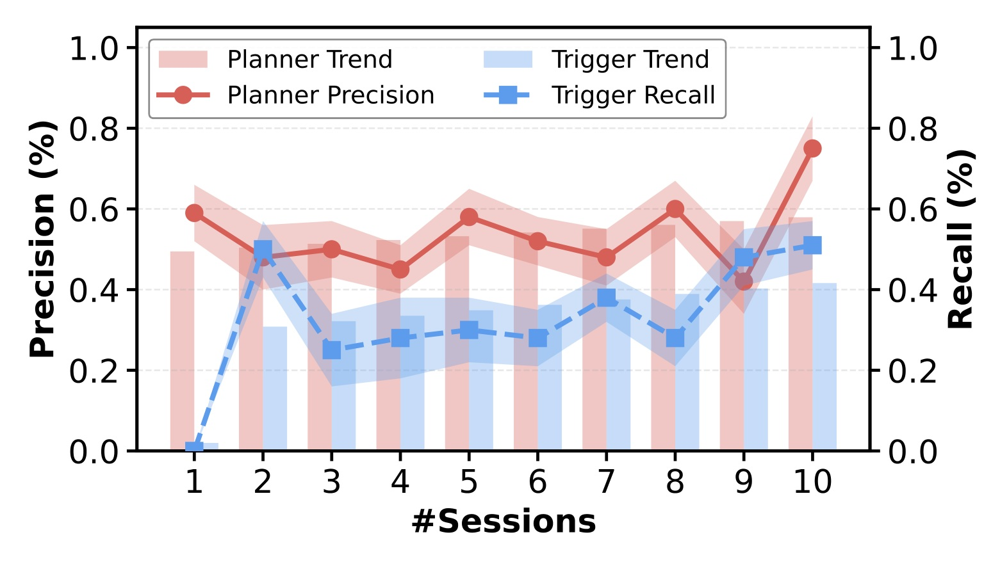
Figure 7 将交互从常见的五个会话延伸到十个，左轴对应保存策略的精确率，右轴对应检索策略的召回率，折线点与半透明趋势区域展示各阶段变化。实际曲线有明显波动，保存精确率在中间多轮上下起伏，检索召回率也在第二会话跳升后回落；不能将作者的总体改善描述理解成逐轮单调上升。第十会话相对起点较好，为持续适应提供比一次主表比较更直接的证据。它说明在该评测流程里，新增交互能够改变存取行为，而不只是积累更多文本后靠固定检索器碰巧找到答案。不过，图上精确率轴虽标百分号，刻度使用零到一，应按比例读数，不能把零点五误解为百分之零点五。图中没有逐轮标注精确数字，本笔记不从视觉估造小数点级结果。
最终阶段同时改善符合双代理合作的机制：更干净的记忆集合让检索目标更集中，较准确的检索又让更多保存动作得到后续验证。但图本身还不能区分两种可能，一种是策略真正学会一般化规则，另一种是同一episode的用户信息逐渐充分而使任务变简单。严格比较应同时画出冻结策略但继续累积记忆的曲线，并用未参与更新的新会话测量改善，才能把记忆内容增长和策略学习分开。原文在线演化消融部分支持这一方向，但没有在本图给出相同坐标下的完整反事实轨迹。
与这个趋势相邻的容量分析也需谨慎。原文 Figure 6 在 CC 上比较不同大小的保存和检索代理，作者强调匹配规模更容易协作，但四B配四B的BLEU-4为二点四二，八B配八B为二点二一；后者Mauve八十点三三又高于前者七十七点六四。容量选择因此依赖目标，而不是沿对角线越大就全面更好。本笔记保留跨会话图作为主要学习证据，容量热图及附录重复热图以这些关键数值解释，避免让图像密度掩盖非单调的真实结果。
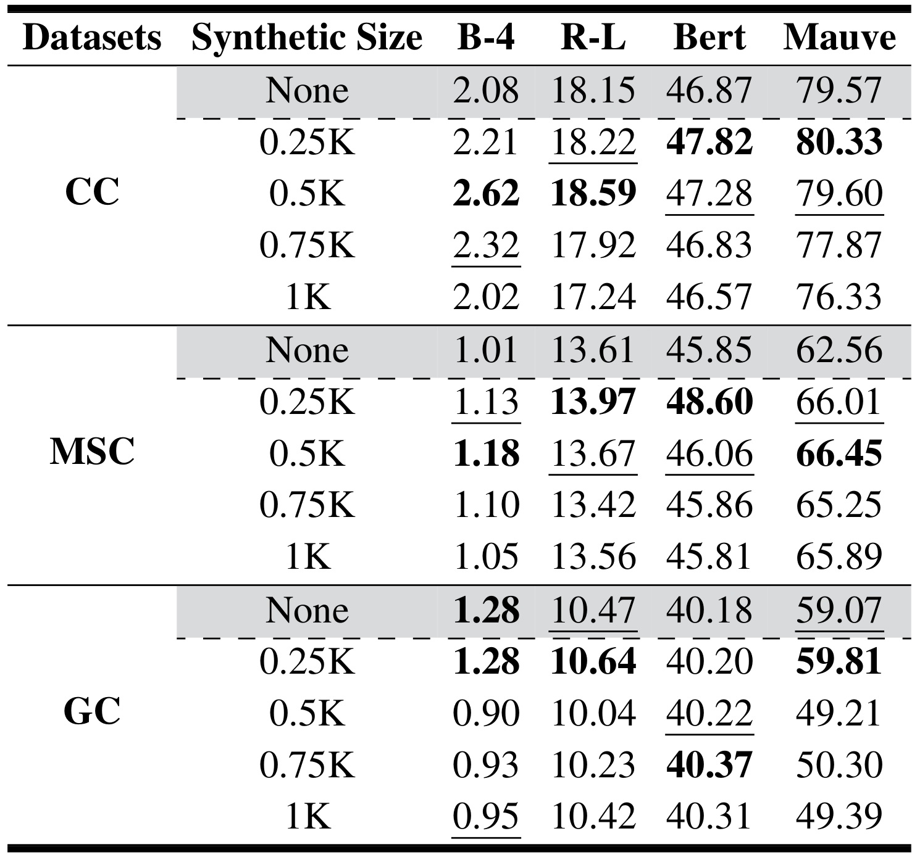
Table 3 是这篇论文最有用的反直觉证据之一。没有合成数据时，CC Mauve 为七十九点五七，零点二五千个 episode 达到八十点三三；增至零点五千后 BLEU-4 上升到二点六二，但 Mauve 回落到七十九点六零，继续增加到一千时则降至七十六点三三。这里并非所有指标都在同一规模达到最大值，所以作者推荐适度预热可以理解为整体折中，不能解释成零点二五千对任何目标都最优。数据量是改变策略初始分布的干预，而不是单调增加知识量的旋钮。
GC 的变化更明显：零点二五千时 Mauve 为五十九点八一，零点五千时降到四十九点二一，零点七五千和一千也只在五十附近。词面指标同样下降，但 BERTScore 略有增加。论文将此归因于过多静态监督使策略难以适应变化，这是合理解释，却还不是通过专门实验排除所有替代机制后的因果结论。额外合成数据可能改变主题、会话长度、负例难度或标签偏差；训练步数随数据变多也可能改变优化效果。区分这些因素需要固定训练步数与数据分布再测，而不能仅从一条规模曲线认定发生了过拟合。
附录 Table 12 比较逆向与正向生成，默认 GPT-4o 条件下 CC Mauve 分别五十七点六零与五十二点一五，Gemini 条件下分别八十点三三与七十点二四，其他数据也支持逆向方案。它证实目标导向合成比无目标前推更适合本文评测，但若种子包含待评价的目标回复，逆向数据就可能带入答案结构。因此必须保存合成时间边界和输入字段来判断泄露风险。仅声明未使用任务训练集不足以自动满足严格零样本口径；测试时合成并训练应单列成本和信息可见范围。
3.4 偏好更新案例与探索行为
在合成和消融之后，原文用一个素食者逐渐补充口味偏好的案例说明存取闭环具体做了什么。
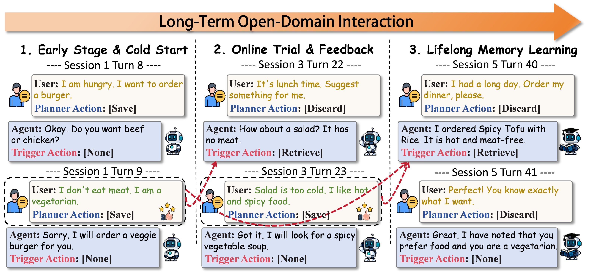
Figure 8 按时间从左向右排列三组会话。最初用户想点汉堡，助手在后续得知用户不吃肉，于是保存素食约束；之后用户要求午餐建议，助手虽然记得不吃肉，却推荐了冷沙拉，用户补充自己喜欢热而辣的食物；最后一次助手结合两类信息推荐辣豆腐与米饭，用户表示满意。红色虚线指向被调用的旧轮次，它强调新反馈不只是作为当轮上下文被消耗，还应进入后续可用的长期记忆。图中多个 Planner 丢弃动作也很有意义：普通请求和礼貌确认并不都值得永久保存，系统可以把预算集中到稳定限制与新偏好。
案例说明了“满足一种约束仍可能答错”的组合性问题。只召回素食标签足以避免肉类，却不能分辨用户当下是否接受冷餐；只召回热辣偏好又可能忽略素食要求。论文把成功归功于存取协作是有直观基础的，但一幅成功案例不能证明冲突解决已经普遍可靠。这里两条偏好是可以同时满足的，并非真正互斥；对用户先喜辣、后来因身体原因不能吃辣的场景，还需要显式过期与优先级机制。保存新条目不等于删除旧条目，最终回答也可能在两个冲突条目之间摇摆。
此外，案例文字展示了多条偏好被整合，而方法动作空间是选择一个记忆索引。可能的实现是一个片段已经汇总多条事实，也可能上下文补充了另一条约束；原文未在该图中明确说明。应把它视为需要代码核对的接口问题，而不是自行改写成多跳检索或并行多记忆融合。上线时可记录最终回答所用的全部片段与来源轮次，并检查新约束是否真的改变候选选择。这种记录能把“助手显得更懂用户”转换成可检查的事实依赖，减少对成功故事的主观解释空间。
辅助 Figure 7 展示十个 session 的 Planner 精确率与 Trigger 召回率上升，附录 Table 8 给出前五阶段高价值信息漏存率从百分之四十八点二降到三点二、误存率从十五点六降到六点一，代理奖励和延迟奖励相关系数从零点六二升到零点八九。它们支持策略在给定实验中学会更一致的选择，但标签来自何种判定协议决定了这些数值能解释到哪里。代理与延迟评分越来越一致可能来自策略更好，也可能来自共同裁判标准被更充分拟合。要检验未探索记忆是否被永久忽略，需要刻意构造低频而关键的延迟需求。
3.5 成本与时延：记忆操作快不等于全程免费
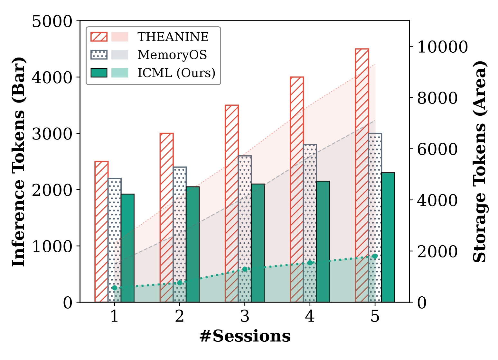
Figure 9 同时画了两类资源：柱形对应左轴推理 token，面积对应右轴存储 token。二者单位相同但统计角色不同，不能直接把某根柱与另一条面积曲线作高低比较。随着会话从第一段延伸到第五段，ICML 的推理用量相对平稳，存储增长也较缓；THEANINE 的两类成本上升更明显，MemoryOS 介于其间。这个结果与选择性保存的设计一致：减少无关记忆不只节省数据库空间，也让生成上下文和检索判断少处理噪声。它为“过滤历史有工程价值”提供了直接证据，而不仅是生成质量上的间接推断。
但纵轴的 token 并没有自动覆盖每一种支出。离线合成故事的调用、监督预热、在线裁判评价、PPO 梯度计算、价值网络以及候选检索构建，都可能采用不同计费和计算口径。若图中的推理 token 只计最终回复请求，就不能把它等同每用户总 token 账单；原文这张图也没有把这些组成完整拆账。存储文字更少同样不意味着全部存储成本更低，策略参数、优化器状态和轨迹缓存也占资源。实际部署要把文本记忆与每用户适配状态分别统计，才能判断它适合高频用户还是所有用户。
另一个边界是会话长度。图只覆盖五个 session，证明的是这个实验范围内增长较缓，不能外推为无限历史下常数空间。若没有删除或过期规则，哪怕每个会话只保存少量事实，记忆总量仍可线性增长；如果长期压缩又会涉及冲突覆盖和信息丢失。论文正文强调过滤噪声，但并未在此展示数月交互、极端长尾用户以及多设备合并后的资源曲线。因此该图应解读为短期实验支持了更好的增长趋势，而不是给出内存复杂度证明。
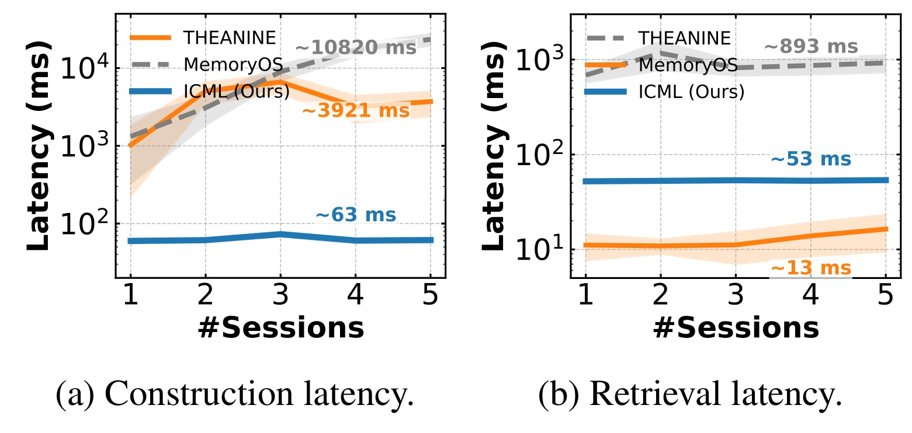
Figure 10 左图是记忆构建，右图是检索，纵轴均为对数刻度。图中 ICML 的构建约六十三毫秒，THEANINE 约三千九百二十一毫秒，MemoryOS 约一万零八百二十毫秒；检索则是 ICML 约五十三毫秒、THEANINE 约十三毫秒、MemoryOS 约八百九十三毫秒。这里必须指出 ICML 并不是检索最快的方法，它的优势主要在构建成本和相对稳定性。如果把两个面板概括成所有操作都比全部基线快，就会漏掉 THEANINE 的检索优势，也会误导真正受读取频率支配的场景。
构建和读取在产品中的调用比例不同。每次输入都做保存判断、每次生成都调用检索的系统，成本应按各自次数加权；若批量离线构建、在线高频读取，则构建慢一些可能可以接受。图中的毫秒还依赖模型加载、设备、批处理、网络以及是否包含远程调用，不能拿来直接估算部署容量。论文报告的结果有助于比较其测试实现，但缺少一套完整可复用的服务环境说明和分位时延报告。尤其用户体验更敏感于尾延迟，均值或图中标注点并不能描述突发在线更新阻塞回复的情况。
这张图对研究设计的启发是把记忆方法评价拆为质量、写入、读取与适应四条轴。ICML 选择用可训练小策略替代复杂关系维护，可以在写入上省去大量操作；然而小策略更新和外部裁判不一定在同一条计时链路里。更公平的端到端比较需要确保同样质量阈值、同样候选规模、同样用户并发及同样设备预算，并明确异步训练是否占用共享资源。只有如此，才能把本文测量转换成具体系统的经济性判断，而不是从局部快数十倍推导整个应用响应也快数十倍。
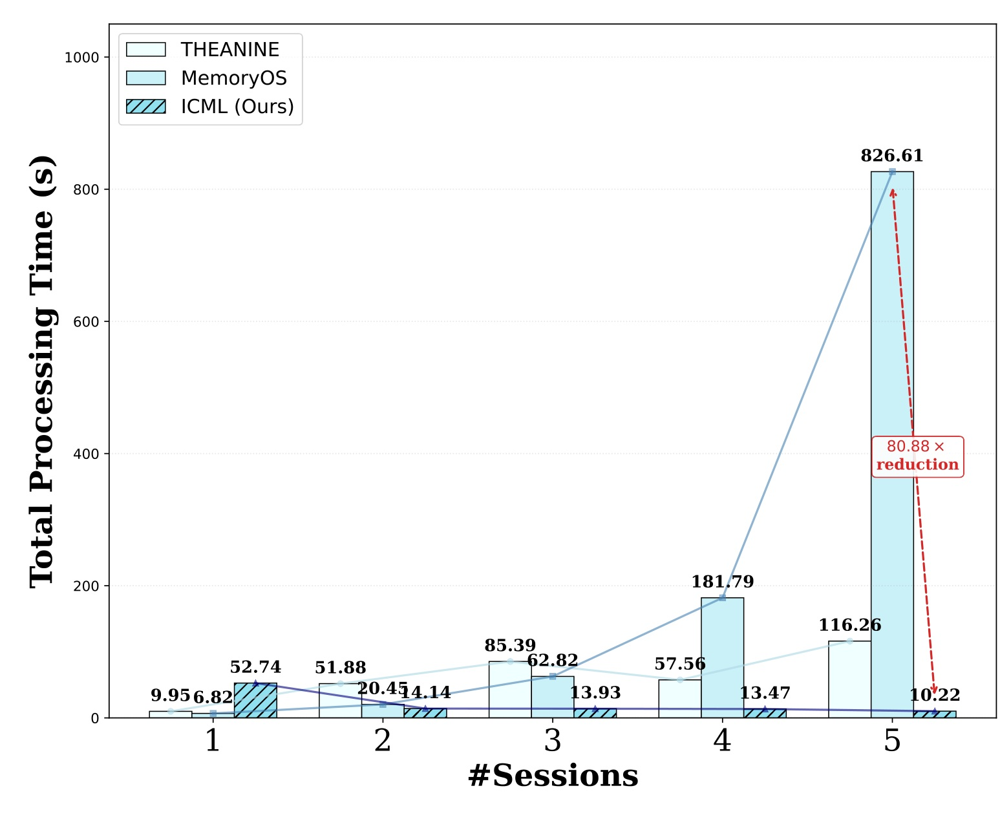
Figure 15 来自附录，展示会话总处理时间而非单个存储动作。ICML 第一会话为五十二点七四秒，作者将较高开销归因于显存分配和模型初始化；随后依次为十四点一四、十三点九三、十三点四七和十点二二秒。MemoryOS 到第五会话达到八百二十六点六一秒，THEANINE 为一百一十六点二六秒。图上八十点八八倍是第五会话 MemoryOS 与 ICML 的特定比较，既不是所有阶段平均加速，也不是 ICML 相对所有基线都达到该倍数。第一会话 ICML 反而明显更慢，冷用户体验因此不能用稳定阶段结果代替。
把它与 Figure 10 并读，可以看到操作延迟和端到端处理时间不在同一量级。几十毫秒是局部步骤，整会话仍以秒计；初始模型准备也不必然覆盖生成三条故事线、完整监督预热与全部在线优化的成本。附录解释了初始高点，但没有充分分解整个适应账单，因此不能声称未知场景的完整学习只需几十毫秒。复现时应从空进程、无用户记忆开始，记录首个可用回答时间、达到目标质量前的累计时间及后续每次更新增量，才能准确评价快速测试时适应。
长期个性化应用还会遇到大量只来一次或几次的用户。如果为每个用户支付独立初始化与训练成本，少数高活跃用户的稳态收益不一定抵消全量冷启动开销；如果多人共享一个策略，则要考虑负迁移、隐私和用户间分布差异。本文并未给出这种流量分布下的总成本实验。附录 Table 11 虽然说明较小奖励模型仍可工作，例如 Gemini 条件下 CC Mauve 用一B裁判下降至七十四点二七，而强裁判是八十点三三，但这也是明确的质量成本交换，不能称为替换廉价裁判完全无损。
附录还有三组值得保留的结果。Table 10 在零点三、零点五、零点七中比较延迟奖励权重，默认零点五整体较好，说明结论只覆盖一个有限搜索范围。Table 7 的较小闭源裁判在 CC 上接近原裁判，支持一定鲁棒性，却不能替代全面跨域验证。Table 13 对照的是去掉离线监督阶段的 RMM 仅在线强化学习变体，因此能够支持本文在指定适应协议下较强，不能写成击败了完整训练配置的 RMM。反向合成给 ICML 提供了监督初始化，这部分额外信息和预算应在对照时明示。
4. 总结
ICML 最值得保留的贡献，是把保存和调用从一组固定规则变成互相约束的可训练决策，并显式建立未来回复分数回传到历史保存动作的通道。回溯合成为早期探索提供了密集依赖，延迟奖励使策略能够修正即时信息价值判断，多骨干与多数据集实验说明它并非只能配合一个生成模型。主结果、消融、人工偏好与成本分析共同形成了比单一自动分数更完整的证据链。这是一条有实际研究价值的记忆学习路线，但目前证据更适合支持受控长期对话实验中的竞争力。
我认为最需要克制的是“真实奖励”和“持续自我演化”的解读。所谓真实奖励仍由模型裁判产生，完整回复的好坏并未扣除无记忆反事实基线，可能把生成器的能力记到记忆头上；十个会话的上升曲线也不等于数月稳定学习。若用户需求突然反转、裁判偏好与用户偏好不同，在线优化甚至可能加速错误记忆的固化。论文没有提供全覆盖的冲突解决、遗忘请求、敏感信息治理或跨用户适应实验，这些都属于完整个人助手系统仍需补齐的工作。
对于推荐系统，最可迁移的部件是保存动作的来源追踪与延迟反馈缓冲。可以让用户画像更新保留被哪次推荐真正使用的证据，再把后续效用反馈给特征选择策略。但应先从影子评估开始，固定排序器和候选池，比较保留、屏蔽或替换一条历史后的预测与行为差异。点击本身受到位置和曝光影响，满意度反馈又可能稀疏，因此需要倾向校正、保守探索或反事实估计。把本文的加权回报直接接到线上点击，容易将热门偏好越存越多，反而损害少数但关键的用户限制。
复现的首要步骤应是确定信息时间线。记录种子会话能看见哪些字段、逆向合成是否接触未来答案、episode 间参数是否共享以及评价样本是否参与更新。其次核对正文奖励公式与伪代码、单选索引与多记忆标注的接口差异，确定一次写入被重复调用时如何计奖，以及等待过久但未触发的轨迹如何处理。这些不是外围工程细节，而是决定在线强化学习到底优化什么的核心定义。没有这些信息，即使复现出主表数值，也很难判断方法的泛化来源。
后续实验可以集中在三类压力场景：突然偏好反转，长时间后才再次需要的低频重要记忆，以及完全不需要记忆的普通请求。前者检查新旧事实优先级，第二类检查探索偏差和遗忘，第三类检查模型是否滥用历史。同时，必须记录合成、奖励模型、监督训练、在线梯度和服务调用的分项成本，按新用户和高活跃用户分别报告。公开代码和实验日志若后续发布，最值得先查看的也是这些协议，而不是只验证总平均分能否再高一点。
总体上，这篇论文适合作为“记忆价值应由未来用途修正”的方法案例来精读。它已经展示联合学习的收益和适度合成的重要性，也给出合成过量、部分指标落后、冷启动昂贵及检索并非最快等真实取舍。继续沿着这些边界做研究，比把它包装为通用终身记忆方案更有价值。对本文的采纳应以可追溯事实、明确时间边界和可分解成本为前提，再逐步验证是否能迁移到更长、更复杂、更贴近真实用户的互动过程。